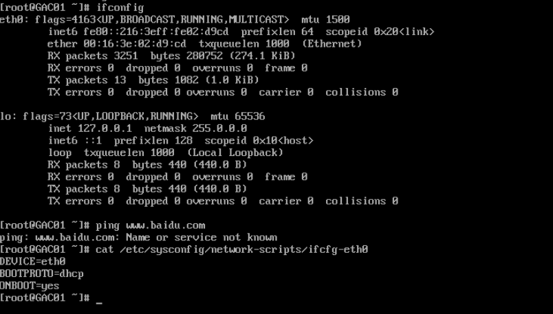

服务器疑难诊断
服务器疑难诊断
pubdate:2019-05-24 14:31:59
linux
网络
查看端口
netstat -nltup
查看防火墙配置
iptables -Lsystemctl status firewalld
iptables 放行端口
iptables -A INPUT -p tcp --dport 22 -j ACCEPT
2019-06-22 13:40:24 ： 今天又是被这个防火墙给坑了。我难受的很
iptables 防火墙使用方法
dhcp 未获取到 IP 地址
